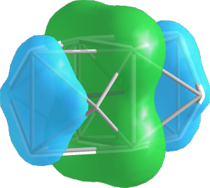
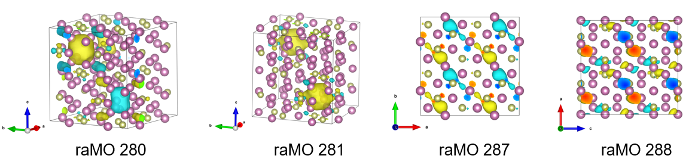

Example system: IrIn₃
In this example, we're going to demonstrate a DFT-raMO run for an intermetallic binary compound in the iridium-indium system, using data from a VASP 4.6 calculation. This example will follow the scheme outlined in this paper.
Setup
Assuming that you have Julia and DFTraMO.jl installed, download the IrIn₃ VASP 4.6 data, a link to which will be provided in the future. This includes the following files:
KPOINTSOUTCARPOSCARPOTCARWAVECARstep1.yaml- the DFT-raMO input file.qdftramoandqdftramo-kestrel- submission scripts for internal use, can be adapted.step2.tarstep3.tarstep4.tar- tarballs for later steps in the tutorial.
The tarball is a large file due to the WAVECAR (over 400 MB).
1. Ir $d_{x^2+y^2}$ orbitals
Constructing the YAML input
You'll find that step1.yaml is a blank template. The Usage section of the manual contains information on each of the keys and values in the file.
Since we're starting from scratch, the checkpoint key should be blank. Leave auto_psphere as true, as this will automatically rerun poor reconstructions (less than 15% of the maximum $P_{sphere}$ value).
For the first run, let's reconstruct the Ir $d_{x^2+y^2}$ orbitals, so set type to dx2y2 and sites to Ir. site_file and radius can be blank, as these are not used for AO type runs. For rsphere, as a rule of thumb, you can use the distance from the reconstruction site to the farthest atom in the first coordination sphere, which is 2.65 Å in this case. This does not have to be precise, and overshooting is generally better than undershooting.
The name field can be set at your convenience (here we use 1_Ir_dx2y2) and becomes the name of the directory where the outputs are written.
Your step1.yaml file should look as below:
checkpoint:
auto_psphere: true
runs:
- name: 1_Ir_dx2y2
type: dx2y2
site_file:
sites: Ir
radius:
rsphere: 2.65Running DFT-raMO for the first time
In the directory you extracted the tarball, run julia, use the DFTraMO.jl package, and start the run:
julia> using DFTraMO
julia> dftramo_run("step1.yaml")You should see the beginnings of the DFT-raMO analysis printed to the terminal.
No checkpoint file specified. Run will start from beginning conditions.
Auto-Psphere: true
Number of runs: 1
Run 1:
name: 1_Ir_dx2y2
type: dx2y2
sites: Ir
rsphere: 2.65 Å
Run: 1_Ir_dx2y2
1, Psphere: 0.905 at site [2.417, 2.417, 0.000]You can use the UnicodePlots package to visualize $P_{sphere}$ data. If you don't load the package, you will see the following message.
[ Info: UnicodePlots not loaded: consider loading it for Psphere logging.This has no impact on your DFT-raMO analysis and can be ignored.
Examining the output
After dftramo_run() is finished, you should see lines of $P_{sphere}$ values printed to the terminal.
1, Psphere: 0.905 at site [2.417, 2.417, 0.000]1- the raMO number in the sequence.0.905- $P_{sphere}$ value.[2.417, 2.417, 0.000]- the site (in Cartesian coordinates) that $P_{sphere}$ is centered on.
The value of $P_{sphere}$ indicates the degree of localization of that raMO function. Though higher values indicate more localization, recall that our setting of rsphere was an arbitrary and estimated value. What is more valuable is the consistency of the $P_{sphere}$ values. Here, the consistent values indicates that the Ir $d_{x^2+y^2}$ orbitals are fully occupied.
See Theory for more details on $P_{sphere}$.
If you check your working directory now, you should see a directory with the name you specified in step1.yaml. Within this directory are four types of files:
*.chkpt- checkpoint at that step in the raMO sequence*.raMO- reciprocal space coefficients for the raMO*.xsf- real space electron density grid of the raMO in the supercell*_psphere_*.txt- $P_{sphere}$ information
The .xsf files allow us to visually inspect the raMO functions with software such as VESTA.
.chkpt, .raMO, and .xsf files are formatted <name>_<raMO number>_<electrons left in supercell>.
For example, 1_Ir_dx2y2_10_556.xsf represents the 10th raMO in the sequence, with 556 electrons remaining and unaccounted for.
$P_{sphere}$ files have the rsphere value embedded in their filename.
2. Ir-Ir isolobal bonds with $sp$ hybrids
Before we reconstruct $sp$-based hybrids, we want to reconstruct all of the Ir $d$ and $s$ orbitals. Skip ahead in the analysis by untarring the step2.tar file, which contains all of the necessary reconstructions.
tar -xf step2.tar
Ir-Ir isolobal bonding
This next section of the raMO sequence will target Ir-Ir isolobal bonding. We want to create multi-center bonding functions between pairs of Ir atoms, with expected contribution from bridging In atoms. For this, we will use the sp type run, which searches for atoms within a specified radius from a central site and creates a target where $s$ and $p$ orbitals are oriented towards the central site.
For this next run, create a new YAML input (step2.yaml) with the following lines:
checkpoint: 6_Ir_s/6_Ir_s_192_192.chkpt
auto_psphere: true
runs:
- name: 7_Ir-Ir
type: sp
site_file: Ir-Ir.txt
sites: all
radius: 1.6
rsphere: 3.5Our previous analysis ended at the 192nd raMO in the sequence, and we have 192 electrons remaining, (explaining the occurrence of 192 twice in the name of the checkpoint file). The radius parameter is the search radius for automatically including atoms in the target.
The Ir-Ir.txt site file should contain the midpoints of the Ir-Ir bonds in Cartesian coordinates. This can be done by using your preferred molecular modeling software (we've done this by converting the POSCAR to a CIF and adding the dummy atoms into Diamond 3). However, if you'd like to skip the manual creation, the contents of Ir-Ir.txt are given below:
X 6.99330 6.99330 10.78620
X 0.00000 6.99330 10.78620
X 6.99330 0.00000 10.78620
X 0.00000 0.00000 10.78620
X 6.99330 6.99330 3.59540
X 6.99330 0.00000 3.59540
X 0.00000 0.00000 3.59540
X 10.48995 10.48995 7.19080
X 3.49665 10.48995 7.19080
X 10.48995 3.49665 7.19080
X 0.00000 6.99330 3.59540
X 3.49665 3.49665 7.19080
X 10.48995 10.48995 0.00000
X 3.49665 10.48995 0.00000
X 10.48995 3.49665 0.00000
X 3.49665 3.49665 0.00000The symbol X can be changed arbitrarily.
Now that you have these files, you can just run DFT-raMO again:
julia> dftramo_run("step2.yaml")As before, have a look at the $P_{sphere}$ values and XSF files to see the reconstructions and validate the electronic assignment.
3. Ir p orbitals with LCAO reconstructions
When working with orbitals with nonzero orbital angular momentum ($p$, $d$, $f$ orbitals) it may be desirable to construct an orbital with an orientation or shape that is not aligned with the coordinate system. To solve this issue, we can use linear combinations of atomic orbitals (LCAOs). LCAOs may also be used to create molecular or multi-center bonding functions, i.e. π-bonding.
To skip to the next step, untar step3.tar in your working directory. You should find two new input files, lcao1.yaml and lcao2.yaml. The contents of lcao1.yaml are given below:
target:
- px: -1
py: 1
lcao:
- [1]
- [2]
- [17]
- [18]
- [33]
- [34]
- [49]
- [50]
- [65]
- [66]
- [81]
- [82]
- [97]
- [98]
- [113]
- [114]As before, the description of the LCAO sites file is given in the Usage section.
Note that lcao2.yaml file contains reconstructions with different orientations ($p_x$ is positive).
The step3.yaml file contains the information for the LCAO reconstruction, and references both lcao1.yaml and lcao2.yaml for each run. Its contents are below:
checkpoint: 8_Ir_pz/8_Ir_pz_240_96.chkpt
auto_psphere: true
runs:
- name: 9_Ir_p_pi1
type: lcao
site_file: lcao1.yaml
sites: all
radius:
rsphere: 2.65
- name: 10_Ir_p_pi2
type: lcao
site_file: lcao2.yaml
sites: all
radius:
rsphere: 2.65Run step3.yaml and inspect the $P_{sphere}$ values and XSF files.
julia> dftramo_run("step3.yaml")4. Remainder analysis of In cage states and In $p$ orbitals
As you complete your DFT-raMO runs, you'll find that the $P_{sphere}$ values of the reconstructed orbitals tends to decrease. To visualize this, untar step4.tar and look at the log for run 11, found at 11_In-In/11_In-In_psphere_4.73.txt:
273 0.6474487830205945 at site [10.490, 3.497, 3.595]
274 0.6429286864719969 at site [0.000, 6.993, 7.191]
275 0.6116188776692522 at site [3.497, 10.490, 3.595]
276 0.6382205090625862 at site [10.490, 10.490, 3.595]
277 0.6504732377051952 at site [6.993, 6.993, 7.191]
278 0.5981010110158822 at site [3.497, 3.497, 10.786]
279 0.5871384506957702 at site [10.490, 3.497, 10.786]
280 0.5162750706706059 at site [3.497, 10.490, 10.786]
281 0.33634765527327326 at site [10.490, 10.490, 10.786]
282 0.6434855799801233 at site [0.000, 0.000, 0.000]
283 0.6433852489950562 at site [6.993, 0.000, 0.000]
284 0.5527474698233648 at site [0.000, 6.993, 0.000]
285 0.49587592534638286 at site [6.993, 6.993, 0.000]
286 0.40417825671730373 at site [0.000, 0.000, 7.191]
287 0.16723350141820606 at site [6.993, 0.000, 7.191]
288 0.1572312564858335 at site [3.497, 3.497, 3.595]We find that $Psphere$ drops precipitously at some points in this run (raMOs 281, 286-288). In order to complete the analysis, we need to open the XSF files to inspect the character of the raMO functions more closely. For reference and throughness, it is recommended to inspect the raMO functions directly preceding these (raMOs 280, 285).

From left to right: isosurfaces of raMO 280, 281, 287, 288
Upon inspection of these raMOs, we come to the following conclusions:
- raMOs 280, 281, and 286 show delocalization but expected character, so electrons are allocated to these runs.
- raMOs 287 and 288 show delocalization and unexpected p-like character on the In atoms. Electrons are not assigned to these raMOs and the functions are returned to the basis set. However, the $p$-like character informs our next target, as raMO functions are orthogonal to each other.
For the final run, we now target the In $p$ orbitals. Create the last input file, step4.yaml:
checkpoint: 11_In-In/11_In-In_286_4.chkpt
auto_psphere: true
runs:
- name: 12.1_In_px
type: px
site_file:
sites: In 1
radius:
rsphere: 3.2
- name: 12.2_In_py
type: py
site_file:
sites: In 1
radius:
rsphere: 3.2
- name: 12.3_In_pz
type: pz
site_file:
sites: In 1
radius:
rsphere: 3.2Run DFT-raMO.
julia> dftramo_run("step4.yaml")The $P_{sphere}$ values are still low, but this is expected. Isosurfaces in the XSFs show delocalized $p$-like functions throughout the In atoms in the cell.
🌟 You performed a DFT-raMO analysis!